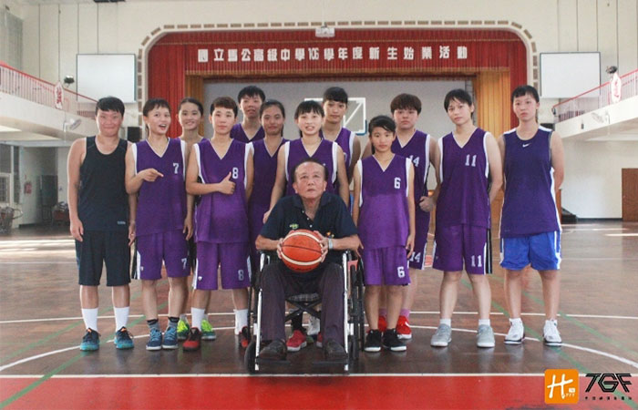

貼文時間：2017/09/19

位於澎湖馬公市，一顆球、一群女孩、一位堅持的教練，在四周蔚藍海域包覆的澎湖，書寫著青春的故事，他們是菊島女孩-馬公女籃，曾五度打進全國八 強，103年起，在蕭國基教練的帶領下，馬公女籃如脫胎換骨般，再度成為乙級女籃的重點隊伍…
馬公女籃成立歷史悠久，自79學年度首分甲乙級，即拿下全國第四名的佳績，而後直到95至97學年度，連三年闖入八強，並榮獲第六名，在當時乙級女籃裡可謂殺手級的球隊，此後直至102學年度，馬公女籃一直掙扎於南區複賽，未能在一嚐全國賽的滋味。直至103學年度，馬公高中校長薛東埠三顧茅蘆下，再度讓久不聞戰事的蕭國基教練接掌馬公女子籃教練一職。為了厚植女籃的戰力，他重新調教這些女子球員，使她們落實基本功，並熟悉各種戰術，這一年裡，馬公高中女子籃球隊展現全新面貌，一舉重返全國四強，在板橋體育館展現來自澎湖追夢女孩們的韌性。
蕭國基教練說，球隊訓練為每日中午一小時及偶爾的六日時段，球隊成員以一般生為主，又於去年起招收體育班學生，但目前成效仍有限，訓練部分強調球員的單打能力，防守則以二三、三二等區域及壓迫為主，也叮嚀球員，籃球不是死的，打球要有想像力！
在今年度的調整上，蕭國基教練表示，今年球隊仰賴4號張唯欣的外線攻勢及控球，14號呂芸儀的籃板優勢及中距離跳投，更需加強快攻成功率及節奏控制。然而，過往離島孩子缺乏比賽經驗，並受限於經費，無法常來台參賽，感受不同地區的強度，也因此近年10月，蕭教練會帶球隊遠赴台灣移地訓練，與台中忠明女籃等校進行交流、訓練等...
不擅言詞的蕭國基教練，總是沉默寡言，但當他拿起了戰術版指揮時，可是暢言無止，仿佛不同人一樣，由此可看出他對籃球的熱愛是多麼深切。
蕭國基老師提到，近年乙級籃球的發展對於環境來說是正向的，老師認為乙級籃球具有更多的故事性及生命力，也呼籲資源應當有效分配，不該被特定族群剝削。
六十多歲的蕭國基老師在澎湖白沙國中和馬公高中服務卅多年，九年前退休，持續義務教球；卅多年來，未婚的他竭盡人生精華，默默在澎湖散播夢想的種子。無奈因事故受傷，後以輪椅代步，但熱血猶在，天天到球埸報到，他說:「來一個就教一個，來兩個就教一雙，人湊不齊就拉椅子當假想敵。」
從不放棄每一個懷著籃球夢的孩子，專教想打球卻不會打球的學生，並要求學業並重，他總說:「球打再好沒用，書念好再來。」
在103年學年度，馬公女籃順利前進台北紅館參加決賽。蕭國基教練更在臉書「 馬中女籃日記」貼文說到:「教練一輩子不服輸，也甚少服人，但是妳們這一群小朋友徹底征服我，贏得我的尊敬，教練以妳們為榮。」而教練坐輪椅指揮戰術的畫面，亦感動許多到場加油的校友及支持馬公女籃的粉絲。
蕭國基教練義務帶隊若干年，對於勝負早已看得很開，其最大心願即是馬公女籃可以長久延續，保留其文化及回憶，有機會再打進全國八強，帶著小女孩們去台灣上台北，體會都市的生活，增加視野...
今年度在蕭國基教練的調教下，這群來自澎湖的女孩們是否能再度闖入全國八強，在這四周環海包圍的菊島，熱愛籃球的女孩與更熱愛籃球的教練的籃球夢隨綿綿浪潮持續延續！